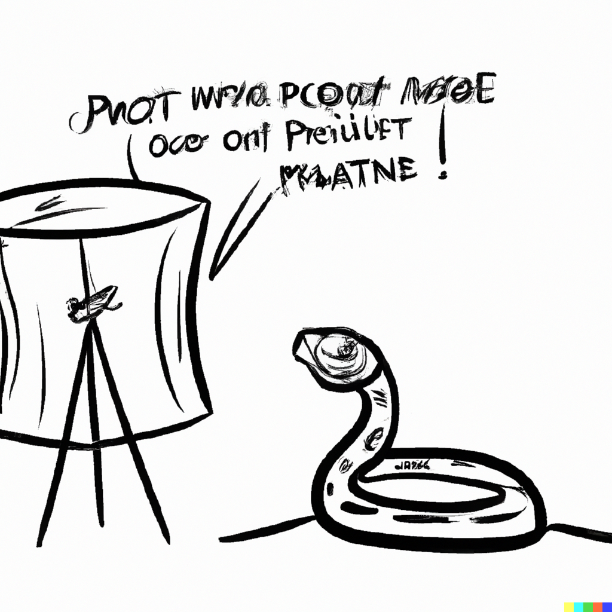

Name mangling#
Double underscore before the method name.
{kind=link}
Python specification#
Yes
Lets see this on example:
Accidental override#
from datetime import datetime
class Foo:
def _get(self):
return self.__class__.__name__
def get_name(self):
return self._get()
class Boo(Foo):
def _get(self):
return datetime.now()
def get_time(self):
return self._get()
assert Boo().get_name() == "Boo"
_get method was unintentionally overridden.
There are two version of cause: _get was added to Foo after it was published and used. _get was added to Boo without checking all non public methods.
Naive protection#
from datetime import datetime
class Foo:
def _Foo__get(self):
return self.__class__.__name__
def get_name(self):
return self._Foo__get()
class Boo(Foo):
def _get(self):
return datetime.now()
def get_time(self):
return self._get()
assert Boo().get_name() == "Boo"
It works but ugly and hard to maintain.
Using Python specification#
from datetime import datetime
class Foo:
def __get(self):
return self.__class__.__name__
def get_name(self):
return self.__get()
class Boo(Foo):
def _get(self):
return datetime.now()
def get_time(self):
return self._get()
assert Boo().get_name() == "Boo"
This name is converted to the _<class><method> in the instance dictionary and when you access it. Then current class is an owner for the method. When you call it from the Foo method it will be _Foo__get, when you try to call it from Boo, it will try to access _Boo__get.
Convention#
If your class is meant to be inherited, use it! This is recommended way to avoid override thing by accident. It does not protect from calling it, you just need to use mangled name for that.
There is no reason to use it for classes that are not used as parents, single underscore is enough.
Example#
pair = 1, 2
first, _ = pair